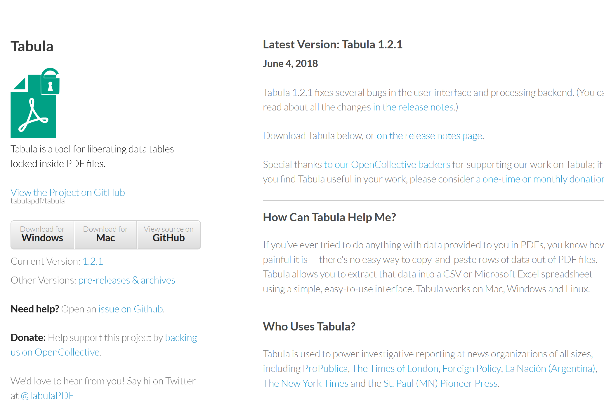
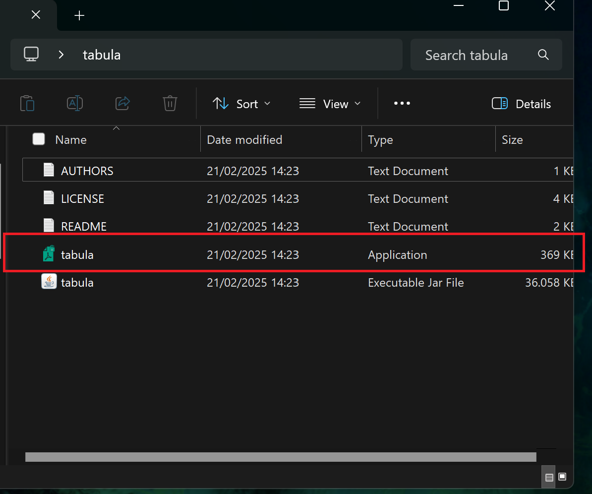
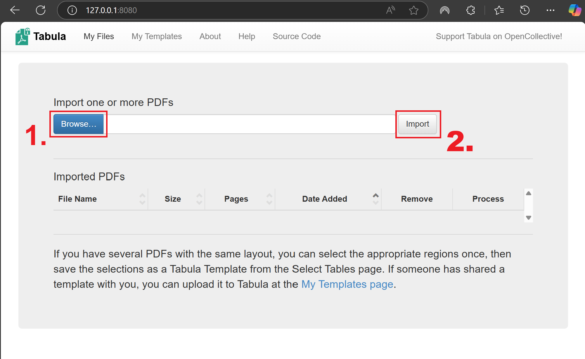
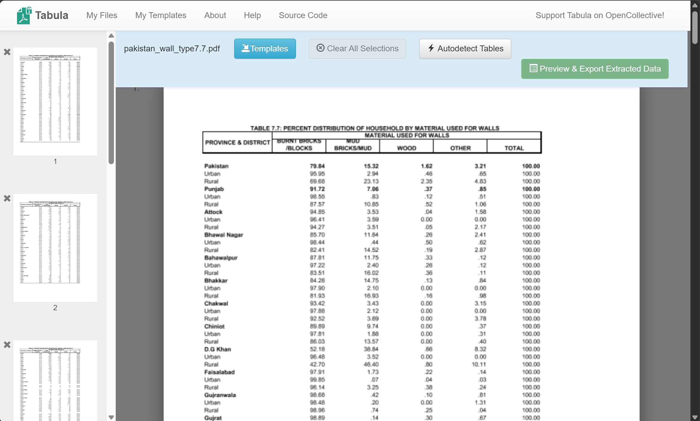
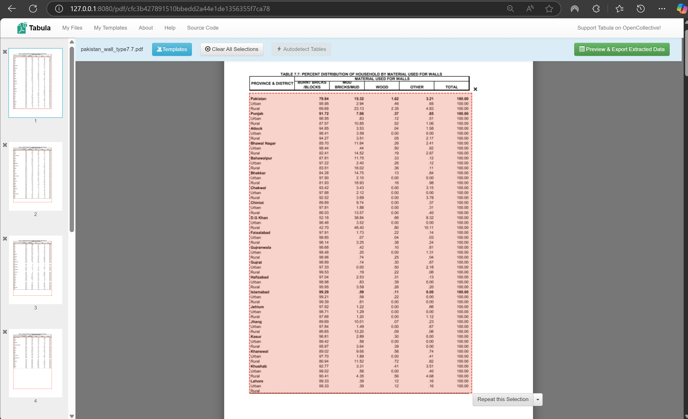
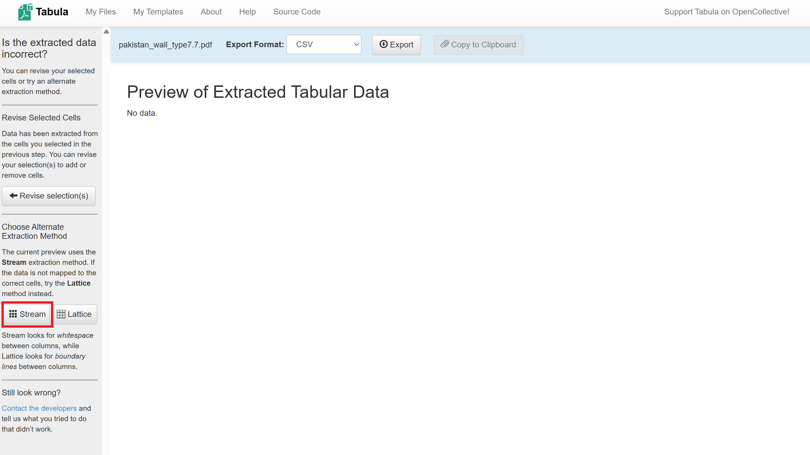
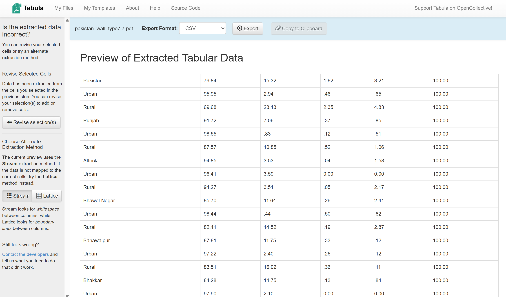
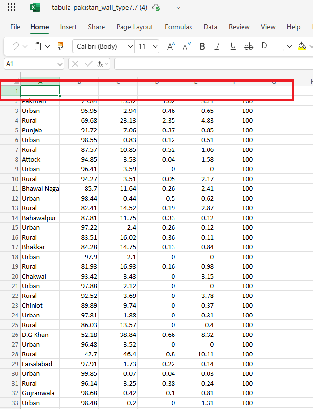
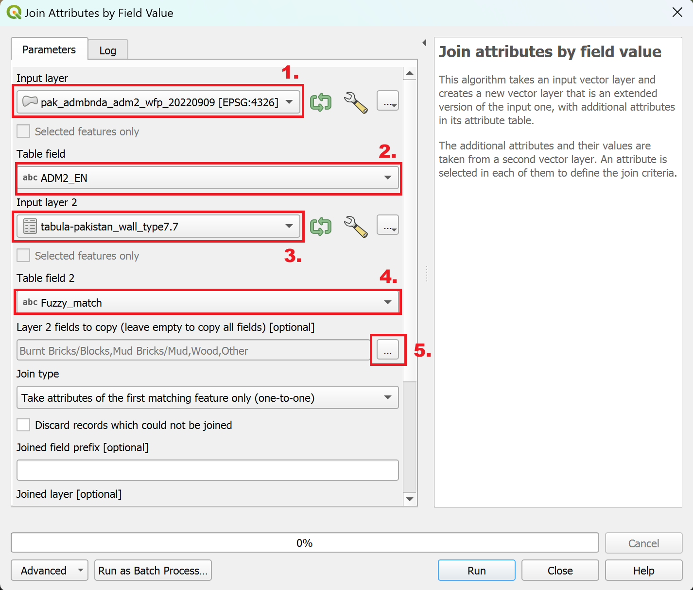

Exercise: Data preparation (Importing PDF tables into QGIS)#
Characteristics of the exercise#
Instructions for the Trainers#
Attention
This exercise makes use of the tabula.technology tool, an open source application which let’s you easily extract tables from a PDF-file. Keep in mind that
Trainers Corner
Prepare the training
Take the time to familiarise yourself with the exercise and the provided material.
Prepare a white-board. It can be either a physical whiteboard, a flip-chart, or a digital whiteboard (e.g. Miro board) where the participants can add their findings and questions.
Before starting the exercise, make sure everybody has installed QGIS and has downloaded and unzipped the data folder.
Check out How to do trainings? for some general tips on training conduction
Conduct the training
Introduction:
Introduce the idea and aim of the exercise.
Provide the download link and make sure everybody has unzipped the folder before beginning the tasks.
Follow-along:
Show and explain each step yourself at least twice and slow enough so everybody can see what you are doing, and follow along in their own QGIS-project.
Make sure that everybody is following along and doing the steps themselves by periodically asking if anybody needs help or if everybody is still following.
Be open and patient to every question or problem that might come up. Your participants are essentially multitasking by paying attention to your instructions and orienting themselves in their own QGIS-project.
Wrap up:
Leave time for any issues or questions concerning the tasks at the end of the exercise.
Leave some time for open questions.
Exercise#
Available Data#
Download the datasets here and unzip them.
Dataset |
Source |
Description |
|---|---|---|
Administrative boundaries for pakistan |
The administrative boundaries (adm0-adm3) for pakistan can be accessed via the humanitarian data exchange. For this exercise, we are interested in the districts (adm2) |
|
Percent distribution of households by material used for walls |
Table 7.7 in the Pakistan Social and living Standards Measurement Survey (2019-20) shows the materials used for walls per household in percents. |
Task 1: Get the data from the PDF file into a CSV file#
In your web-browser, go to Tabula.technology and download the application.
{kind=link}

The Tabula.technology website with the download links to the left#
Unzip the downloaded file into a location of your choosing (e.g., Programs, Desktop, …).
Open the folder where you unzipped the file and open the “Tabula” application
{kind=link}

A new browser window will open with this address: http://localhost:8080. This is the application. If the browser does not open automatically, you can open the browser and enter this go to this address manually.
{kind=link}

Now let’s import the PDF file with the wall types into tabula:
Click on
Browseand navigate to the exercise data folder:...\data\inputand select the PDF “pakistan_wall_type7.7”. ClickOpen.Click
Importand wait for the PDF to load. Once loaded, it will open automatically.
{kind=link}

Here we will select the portion of the PDF that contains the data table. Tabula expects a table with one row of headers at the top for each column, followed by the rows with the data. By dragging a rectangle on the PDF, we can create a selection where tabula should look for the data table. Drag a rectangle and adjust the boarders so the table fits as precisely as possible into selection. Make sure to only capture the relevant information. Since the headers in this table has an unconventional formatting, it should be left out so the resulting csv table is easier to adjust. We will add the headers manually once extracted. F
{kind=link}

Once you are satisfied with the selection, you can click on
Repeat this Selectionto duplicate the selection on the next pages.Take a look on the following pages and make sure the table is still fully contained by the selection.
Click on
Preview & Export Extracted Dataon the top right of the window.A new window will appear where the data will show up. At first, nothing will be visible. First, click on
Streamon the left.
{kind=link}

The data from the PDF table will appear in the main window. Review the table.
{kind=link}

Click on
Export, this will save the.csvinto your downloads folder.Move the file to the
/data/interim/-folder.
Congratulations, the data from the PDF has been extracted into a CSV file!
Task 2: Clean the data from errors and unwanted entries#
Note
The necessary steps to filter the data might be different depending on the editor you use. In this exercise, we will go through the workflow with the free version of Microsoft Excel.
Open the extracted CSV file in Excel. It might look like this:

Excel does not automatically recognise the comma delimited format. We can fix this by selecting the column A, navigating to
Data>Text to Columns. A new window will open. Leave the settings as they are and clickOk.
Note
In the web version of excel, you can fix the columns by selecting column A, navigating to Data > Split Text to Columns
{kind=link}

The data table should now look like this. It is still missing column headers (red)#
We have to add the column names back, as we did not extract them with tabular. Right-click on the first row and select
Insert 1 Row Above. A new row should appear.Enter the column headings as they are in the PDF-file:
Province & District |
Burnt Bricks/Blocks |
Mud Bricks/Mud |
Wood |
Other |
Total |
|---|
Now we can format the data into an excel table. This will allow us to apply filters to remove the unwanted entries. Select the columns A to F and navigate to
Home>Format as Tableand select a table styling of your choosing.
Now we have a usable .csv file with the information. However, there are still some unwanted entries and a few formatting mistakes. First, let’s remove all the rows with the data on rural and urban distribution. We want to visualise the distribution on district level, so a distinction between urban and rural is not necessary.
Click on the small arrow next to the “Province & District” column. A dropdown-menu will open.
In the dropdown-menu, uncheck the
Select All-Box and scroll down to check all the entries with the valueUrbanandRural. Also add the entries that have numerical values attached toUrbanorRural. ClickApply.
{kind=link}
{kind=link}
The table should now only show the entries with rural or urban in the “Province & District”. Select them all and click on
Remove selected rows.Now, we have to remove the filter we applied.
Lets go through the resulting table and see if we need to fix more entries. There are a few entries where the the values for the percentages are not formatted correctly. Copy the values from the columns Burnt Bricks/Blocks, Mud Bricks/Mud, Wood, Other one cell to the right and enter the numerical value that mistakenly got added to the Provinces & District column.
Save the formatted csv file in the input data folder (
.../module_5_ex_7_data_cleansing/data/input/) under the nametabula-pakistan_wall_type7.7.
Great! Now we are ready to import the CSV-file into QGIS!
Task 3: Import the Data into QGIS#
Note
Fuzzy merge is a technique used in data processing to combine two datasets based on similar, but not necessarily identical, values. This is particularly useful when dealing with data that may have inconsistencies, such as typos or different formats.
Instead of looking for exact matches, fuzzy merge uses algorithms to compare values and determine how similar they are. For example, “Jon” and John” might be considered a match because how similar they are. Each comparison generates a similarity score, which indicates how closely the two values match.
Open QGIS and create a new project.
Save the project in the exercise folder.
Import the administrative boundaries located in the data input folder:
.../module_5_ex_7_data_cleansing/data/input/Now let’s perform a fuzzy merge: Open the field calculator for the layer called
tabula-pakistan_wall_type7.7and enter the following expression:array_first(aggregate( layer:= 'pak_admbnda_adm2_wfp_20220909', aggregate:='array_agg', expression:=ADM2_EN, filter:=levenshtein(ADM2_EN, attribute(@parent, 'Province & Disctrict')) <= 2, order_by:=levenshtein(ADM2_EN, attribute(@parent, 'Province & Disctrict')) ))
Enter an
Output field name, set theOutput field typetoText (string)and increase theoutput field lengthto 40.Click
Ok. The CSV file should now have a new column. In this column you will find the values from the adm2 polygon layer which have been matched using the fuzzy merge algorithm.We can now perform an attribute join by selecting the
ADM2_ENand newly created fuzzy merge column as identifying column. In the processing toolbox, search for the tool “Join attributes by field value”. Double-click on it.A new window will open. Here, set the following parameters:
Input layer: ADM2 polygon layer
Table field:
ADM2_ENInput layer 2:
tabula-pakistan_wall_type7.7Table field 2:
Fuzzy_matchLayer 2 fields to copy:
Burnt Bricks/Blocks, Mud Bricks/Mud, Wood, Other
{kind=link}

The “Join attributes by field value” parameters#
Click
Run.
Congratulations, we have now successfully joined the information from the PDF file to a polygon layer!
Task 4: Visualisation of the Data#
Open the layer styling panel and select the Graduated symbolisation method.
Under
Value, selectBurnt Bricks/Blocks.Click on
Classify.
The resulting symbolisation could look something like this:

The darker the colour, the higher the percentage of buildings having burnt bricks or blocks as wall type. The grey areas are the districts where we there is no data available.#